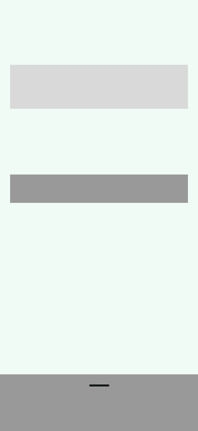

bonsai
Many people struggle to identify species quickly and accurately. Existing apps are often cluttered with ads, complex interfaces, and unnecessary features. Users want a simple and user-friendly solution for plant identification that is easy to use.
While designing bonsai, the goal was to create a intuitive plant identification experience.
To better understand user needs, I conducted a survey on plant identification apps while designing bonsAI, informed by the feedback of 30 users:
What matters most in a plant ID app?
Several times a week – 42%
Once a month – 38%
Rarely – 20%
What matters most in a plant ID app?
Several times a week - 40%
Once a month - 30%
Rarely - 20%
What matters most in a plant ID app?
Several times a week - 40%
Once a month - 30%
Rarely - 20%
Got the data – time to design!
The main view of bonsai will consist of just a few elements. The top of the screen will feature the "tip of the day" section, where users will see random plant care tips. However, the scan button will play a key role on this screen. It will have a considerable size because according to Fitt's Law, the time required to reach a target depends on its size and distance. Therefore, the button will also be placed at the center of the screen to ensure easy access for the user.
Bonsai is a mobile application designed to instantly identify plant species using a smartphone camera. The app aims to provide an intuitive and accurate tool for plant enthusiasts, gardeners, and nature lovers who often struggle to recognize various plants.

Bonsai is a mobile application designed to instantly identify plant species using a smartphone camera. The app aims to provide an intuitive and accurate tool for plant ehe identification process and helping users care for their plants with confidence.
Bonsai is a mobile application designed to instantly identify plant species using a smartphone camera. The app aims to provide an intuitive and accurate tool for plant enthusiasts, gardeners, and nature lovers who often struggle to recognize various plants.